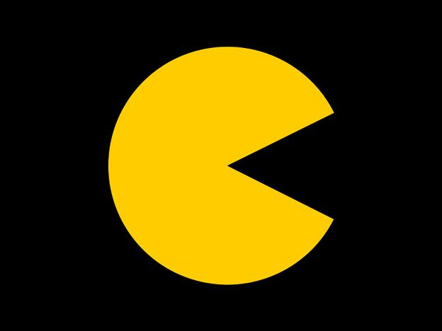

Document
Pac-Man es uno de los personajes y videojuegos más icónicos de la historia, creado en Japón por el diseñador Toru Iwatani para la empresa Namco.
Origen e Historia
• Lanzamiento: Salió a la luz el 22 de mayo de 1980 en Japón (y en octubre de ese mismo año en Norteamérica).
• Inspiración del diseño: Iwatani ideó al personaje principal viendo una pizza a la que le faltaba una porción, lo que formó la figura de una boca abierta.
• El nombre: Originalmente se llamó Puck-Man, derivado de la onomatopeya japonesa "paku-paku" (el sonido de abrir y cerrar la boca al comer). Fue cambiado a "Pac-Man" para el mercado occidental con el fin de evitar actos vandálicos que alteraran la 'P' por una 'F'.
• Propósito: Iwatani buscaba crear un juego amigable que atrajera a todo tipo de público —incluidas las mujeres y las familias— en una época dominada por juegos bélicos y de disparos.
Mecánica y Enemigos
Document
Document
Volver a la Pantalla Principal
Document